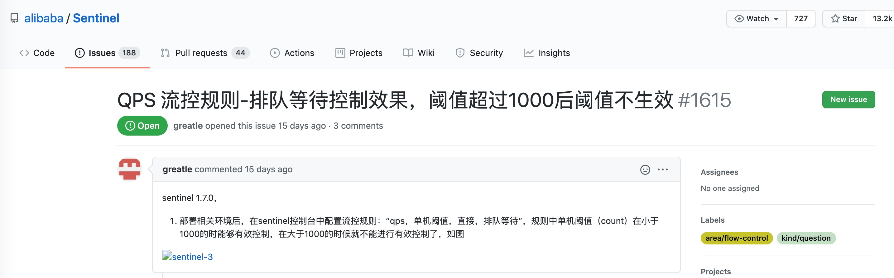

- 01 开篇词：一次服务雪崩问题排查经历.md.html
- 02 为什么需要服务降级以及常见的几种降级方式.md.html
- 03 为什么选择 Sentinel，Sentinel 与 Hystrix 的对比.md.html
- 04 Sentinel 基于滑动窗口的实时指标数据统计.md.html
- 05 Sentinel 的一些概念与核心类介绍.md.html
- 06 Sentinel 中的责任链模式与 Sentinel 的整体工作流程.md.html
- 07 Java SPI 及 SPI 在 Sentinel 中的应用.md.html
- 08 资源指标数据统计的实现全解析（上）.md.html
- 09 资源指标数据统计的实现全解析（下）.md.html
- 10 限流降级与流量效果控制器（上）.md.html
- 11 限流降级与流量效果控制器（中）.md.html
- 12 限流降级与流量效果控制器（下）.md.html
- 13 熔断降级与系统自适应限流.md.html
- 14 黑白名单限流与热点参数限流.md.html
- 15 自定义 ProcessorSlot 实现开关降级.md.html
- 16 Sentinel 动态数据源：规则动态配置.md.html
- 17 Sentinel 主流框架适配.md.html
- 18 Sentinel 集群限流的实现（上）.md.html
- 19 Sentinel 集群限流的实现（下）.md.html
- 20 结束语：Sentinel 对应用的性能影响如何？.md.html
- 21 番外篇：Sentinel 1.8.0 熔断降级新特性解读.md.html
- 捐赠
11 限流降级与流量效果控制器（中）
经典限流算法
计数器算法
Sentinel 中默认实现的 QPS 限流算法和 THREADS 限流算法都属于计数器算法。QPS 限流的默认算法是通过判断当前时间窗口（1 秒）的 pass（被放行的请求数量）指标数据判断，如果 pass 总数已经大于等于限流的 QPS 阈值，则直接拒绝当前请求，每通过一个请求当前时间窗口的 pass 指标计数加 1。THREADS 限流的实现是通过判断当前资源并行占用的线程数是否已经达到阈值，是则直接拒绝当前请求，每通过一个请求 THREADS 计数加 1，每完成一个请求 THREADS 计数减 1。
漏桶算法（Leaky Bucket）
漏桶就像在一个桶的底部开一个洞，不控制水放入桶的速度，而通过底部漏洞的大小控制水流失的速度，当水放入桶的速率小于或等于水通过底部漏洞流出的速率时，桶中没有剩余的水，而当水放入桶的速率大于漏洞流出的速率时，水就会逐渐在桶中积累，当桶装满水时，若再向桶中放入水，则放入的水就会溢出。我们把水换成请求，往桶里放入请求的速率就是接收请求的速率，而水流失就是请求通过，水溢出就是请求被拒绝。
令牌桶算法（Token Bucket）
令牌桶不存放请求，而是存放为请求生成的令牌（Token），只有拿到令牌的请求才能通过。原理就是以固定速率往桶里放入令牌，每当有请求过来时，都尝试从桶中获取令牌，如果能拿到令牌请求就能通过。当桶放满令牌时，多余的令牌就会被丢弃，而当桶中的令牌被用完时，请求拿不到令牌就无法通过。
流量效果控制器：TrafficShapingController
Sentinel 支持对超出限流阈值的流量采取效果控制器控制这些流量，流量效果控制支持：直接拒绝、Warm Up（冷启动）、匀速排队。对应 FlowRule 中的 controlBehavior 字段。在调用 FlowRuleManager#loadRules 方法时，FlowRuleManager 会将限流规则配置的 controlBehavior 转为对应的 TrafficShapingController。
public interface TrafficShapingController {
// 判断当前请求是否能通过
boolean canPass(Node node, int acquireCount, boolean prioritized);
boolean canPass(Node node, int acquireCount);
}
- node：根据 limitApp 与 strategy 选出来的 Node（StatisticNode、DefaultNode、ClusterNode）。
- acquireCount：与并发编程 AQS#tryAcquire 方法的参数作用一样，Sentinel 将需要被保护的资源包装起来，这与锁的实现是一样的，需要先获取锁才能继续执行，acquireCount 表示申请占用共享资源的数量，只有申请到足够的共享资源才能执行。例如，线程池有 200 个线程，当前方法执行需要申请 3 个线程才能执行，那么 acquireCount 就是 3。acquireCount 的值一般为 1，当限流规则配置的限流阈值类型为 threads 时，表示需要申请一个线程，当限流规则配置的限流阈值类型为 qps 时，表示需要申请放行一个请求。
- prioritized：表示是否对请求进行优先级排序，SphU#entry 传递过来的值是 false。
controlBehavior 的取值与使用的 TrafficShapingController 对应关系如下表格所示：
| control_Behavior | TRAFFIC_SHAPING_controller |
|---|---|
| CONTROL_BEHAVIOR_WARM_UP | WarmUpController |
| CONTROL_BEHAVIOR_RATE_LIMITER | RateLimiterController |
| CONTROL_BEHAVIOR_WARM_UP_RATE_LIMITER | WarmUpRateLimiterController |
| CONTROL_BEHAVIOR_DEFAULT | DefaultController |
DefaultController
DefaultController 是默认使用的流量效果控制器，直接拒绝超出阈值的请求。当 QPS 超过限流规则配置的阈值，新的请求就会被立即拒绝，抛出 FlowException。适用于对系统处理能力明确知道的情况下，比如通过压测确定阈值。实际上我们很难测出这个阈值，因为一个服务可能部署在硬件配置不同的服务器上，并且随时都可能调整部署计划。
DefaultController#canPass 方法源码如下：
@Override
public boolean canPass(Node node, int acquireCount, boolean prioritized) {
// (1)
int curCount = avgUsedTokens(node);
// (2)
if (curCount + acquireCount > count) {
// （3）
if (prioritized && grade == RuleConstant.FLOW_GRADE_QPS) {
long currentTime;
long waitInMs;
currentTime = TimeUtil.currentTimeMillis();
// （4）
waitInMs = node.tryOccupyNext(currentTime, acquireCount, count);
// （5）
if (waitInMs < OccupyTimeoutProperty.getOccupyTimeout()) {
// 将休眠之后对应的时间窗口的 pass(通过)这项指标数据的值加上 acquireCount
node.addWaitingRequest(currentTime + waitInMs, acquireCount);
// 添加占用未来的 pass 指标的数量
node.addOccupiedPass(acquireCount);
// 休眠等待，当前线程阻塞
sleep(waitInMs);
// 抛出 PriorityWait 异常，表示当前请求是等待了 waitInMs 之后通过的
throw new PriorityWaitException(waitInMs);
}
}
return false;
}
return true;
}
- avgUsedTokens 方法：如果当前规则的限流阈值类型为 QPS，则 avgUsedTokens 返回 node 当前时间窗口统计的每秒被放行的请求数；如果当前规则的限流阈值类型为 THREADS，则 avgUsedTokens 返回 node 统计的当前并行占用的线程数。
- 如果将当前请求放行会超过限流阈值，且不满足（3），则直接拒绝当前请求。
- 如果限流阈值类型为 QPS，表示具有优先级的请求可以占用未来时间窗口的统计指标。
- 如果可以占用未来时间窗口的统计指标，则 tryOccupyNext 返回当前请求需要等待的时间，单位毫秒。
- 如果休眠时间在限制可占用的最大时间范围内，则挂起当前请求，当前线程休眠 waitInMs 毫秒。休眠结束后抛出 PriorityWait 异常，表示当前请求是等待了 waitInMs 之后通过的。
一般情况下，prioritized 参数的值为 false，如果 prioritized 在 ProcessorSlotChain 传递的过程中，排在 FlowSlot 之前的 ProcessorSlot 都没有修改过，那么条件（3）就不会满足，所以这个 canPass 方法实现的流量效果就是直接拒绝。
RateLimiterController
Sentinel 匀速流控效果是漏桶算法结合虚拟队列等待机制实现的，可理解为存在一个虚拟的队列，请求在队列中排队通过，每（count/1000）毫秒可通过一个请求。虚拟队列的好处在于队列非真实存在，多核 CPU 多个请求并行通过时也可以通过，也就是说，实际通过的 QPS 会超过限流阈值的 QPS，但不会超很多。
要配置限流规则使用匀速通过效果控制器 RateLimiterController，则必须配置限流阈值类型为 GRADE_QPS，并且阈值要少于等于 1000。例如：
FlowRule flowRule = new FlowRule();
flowRule.setCount(30);
// 流量控制效果配置为使用匀速限流控制器
flowRule.setControlBehavior(RuleConstant.CONTROL_BEHAVIOR_RATE_LIMITER);
// 虚拟队列的最大等待时长，排队等待时间超过这个值的请求会被拒绝
flowRule.setMaxQueueingTimeMs(1000);
flowRule.setResource("GET:/hello");
FlowRuleManager.loadRules(Collections.singletonList(flowRule));
RateLimiterController 的字段和构造方法源码如下：
public class RateLimiterController implements TrafficShapingController {
private final int maxQueueingTimeMs;
private final double count;
private final AtomicLong latestPassedTime = new AtomicLong(-1);
public RateLimiterController(int timeOut, double count) {
this.maxQueueingTimeMs = timeOut;
this.count = count;
}
}
- maxQueueingTimeMs：请求在虚拟队列中的最大等待时间，默认 500 毫秒。
- count：限流 QPS 阈值。
- latestPassedTime：最近一个请求通过的时间，用于计算下一个请求的预期通过时间。
RateLimiterController 实现的 canPass 方法源码如下：
@Override
public boolean canPass(Node node, int acquireCount, boolean prioritized) {
//....
// (1)
long currentTime = TimeUtil.currentTimeMillis();
long costTime = Math.round(1.0 * (acquireCount) / count * 1000);
// (2)
long expectedTime = costTime + latestPassedTime.get();
// （3）
if (expectedTime <= currentTime) {
latestPassedTime.set(currentTime);
return true;
} else {
// （4）
long waitTime = costTime + latestPassedTime.get() - TimeUtil.currentTimeMillis();
if (waitTime > maxQueueingTimeMs) {
return false;
} else {
try {
// （5）
long oldTime = latestPassedTime.addAndGet(costTime);
waitTime = oldTime - TimeUtil.currentTimeMillis();
if (waitTime > maxQueueingTimeMs) {
// （6）
latestPassedTime.addAndGet(-costTime);
return false;
}
// （7）
if (waitTime > 0) {
Thread.sleep(waitTime);
}
return true;
} catch (InterruptedException e) {
}
}
}
return false;
}
1. 计算队列中连续的两个请求的通过时间的间隔时长
假设阈值 QPS 为 200，那么连续的两个请求的通过时间间隔为 5 毫秒，每 5 毫秒通过一个请求就是匀速的速率，即每 5 毫秒允许通过一个请求。
2. 计算当前请求期望的通过时间
请求通过的间隔时间加上最近一个请求通过的时间就是当前请求预期通过的时间。
3. 期望通过时间少于当前时间则当前请求可通过并且可以立即通过
理想的情况是每个请求在队列中排队通过，那么每个请求都在固定的不重叠的时间通过。但在多核 CPU 的硬件条件下可能出现多个请求并行通过，这就是为什么说实际通过的 QPS 会超过限流阈值的 QPS。
源码中给的注释：这里可能存在争论，但没关系。因并行导致超出的请求数不会超阈值太多，所以影响不大。
4. 预期通过时间如果超过当前时间那就休眠等待，需要等待的时间等于预期通过时间减去当前时间，如果等待时间超过队列允许的最大等待时间，则直接拒绝该请求。
5. 如果当前请求更新 latestPassedTime 为自己的预期通过时间后，需要等待的时间少于限定的最大等待时间，说明排队有效，否则自己退出队列并回退一个间隔时间。
此时 latestPassedTime 就是当前请求的预期通过时间，后续的请求将排在该请求的后面。这就是虚拟队列的核心实现，按预期通过时间排队。
6. 如果等待时间超过队列允许的最大排队时间则回退一个间隔时间，并拒绝当前请求。
回退一个间隔时间相当于将数组中一个元素移除后，将此元素后面的所有元素都向前移动一个位置。此处与数组移动不同的是，该操作不会减少已经在等待的请求的等待时间。
7. 休眠等待
匀速流控适合用于请求突发性增长后剧降的场景。例如用在有定时任务调用的接口，在定时任务执行时请求量一下子飙高，但随后又没有请求的情况，这个时候我们不希望一下子让所有请求都通过，避免把系统压垮，但也不想直接拒绝超出阈值的请求，这种场景下使用匀速流控可以将突增的请求排队到低峰时执行，起到“削峰填谷”的效果。
在分析完源码后，我们再来看一个 Issue，如下图所示。

为什么将 QPS 限流阈值配置超过 1000 后导致限流不生效呢？
计算请求通过的时间间隔算法如下：
long costTime = Math.round(1.0 * (acquireCount) / count * 1000);
假设限流 QPS 阈值为 1200，当 acquireCount 等于 1 时，costTime=1⁄1200*1000，这个结果是少于 1 毫秒的，使用 Math.round 取整后值为 1，而当 QPS 阈值越大，计算结果小于 0.5 时，Math.round 取整后值就变为 0。Sentinel 支持的最小等待时间单位是毫秒，这可能是出于性能的考虑。当限流阈值超过 1000 后，如果 costTime 计算结果不少于 0.5，则间隔时间都是 1 毫秒，这相当于还是限流 1000QPS；而当 costTime 计算结果小于 0.5 时，经过 Math.round 取整后值为 0，即请求间隔时间为 0 毫秒，也就是不排队等待，此时限流规则就完全无效了，配置等于没有配置。
© 2019 - 2023 Liangliang Lee. Powered by gin and hexo-theme-book.